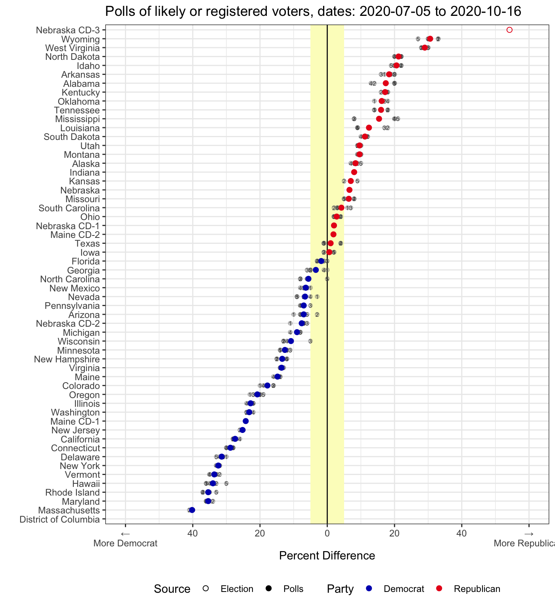
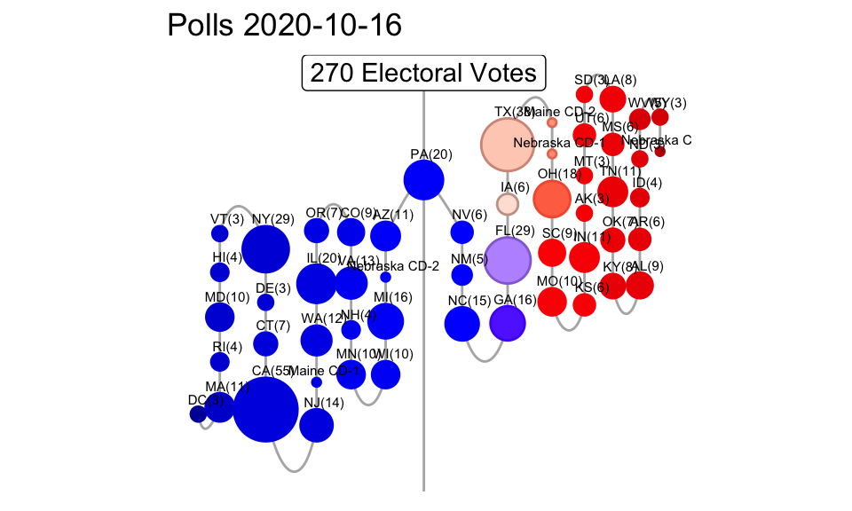
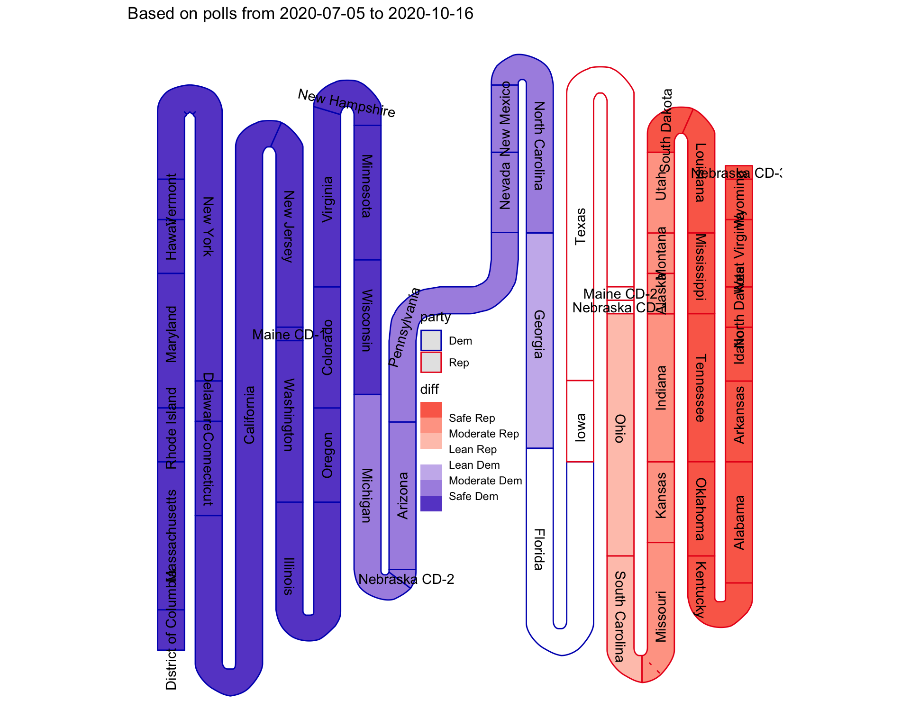

R package for visualizations of election (or poll) results as easy as adding geom_electoral_building. While the geom is still in the planning stages, several types of visualizations are implemented and ready to use.
Installation
The development version from GitHub with:
# install.packages("devtools") devtools::install_github("heike/electionViz")
Example
We will be inundated with information about the state of the polls in the build-up to the upcoming Presidential election of 2020.
With the tools of this package you will be able to pick your favorite visualization(s) and explore the results your own way.
Hexbin Cartogram of Election Results by State
Each state is represented by one hexagon. This map has been made available by Andrew X Hill at CARTO.
data(elections) el12 <- elections %>% filter(year == 2012) gg12 <- hexplot(el12$state, el12$perc_rep > el12$perc_dem) + scale_fill_party("", labels=c("Democrat", "Republican")) + theme(legend.position = "bottom") + ggtitle("Election 2012") el16 <- elections %>% filter(year == 2016) gg16 <- hexplot(el16$state, el16$perc_rep > el16$perc_dem) + scale_fill_party("", labels=c("Democrat", "Republican")) + theme(legend.position = "bottom") + ggtitle("Election 2016") gridExtra::grid.arrange(gg12, gg16, ncol=2)

Hexbin Cartogram of the US Presidential Election by Electoral Votes
Each state is represented by a set of hexagons corresponding in number to the state’s electoral votes. This map was adapted from the object sf_FiveThirtyEightElectoralCollege in Bhaskar Karambelkar’s R package tilegramsR.


Visualization of Polls
Accessing data of the most recent polls from RealClearPolitics or FiveThirtyEight is done with functions rcp_update() or fivethirtyeight_update() respectively. Each one of these functions has a parameter polls to allow for a finer grained choice of which polls to focus on:
new_polls <- fivethirtyeight_update(polls="president_polls") #> Warning: 44 parsing failures. #> row col expected actual file #> 1923 sponsor_candidate 1/0/T/F/TRUE/FALSE Nicole Galloway 'https://projects.fivethirtyeight.com/polls-page/president_polls.csv' #> 1924 sponsor_candidate 1/0/T/F/TRUE/FALSE Nicole Galloway 'https://projects.fivethirtyeight.com/polls-page/president_polls.csv' #> 2585 sponsor_candidate 1/0/T/F/TRUE/FALSE Al Gross 'https://projects.fivethirtyeight.com/polls-page/president_polls.csv' #> 2586 sponsor_candidate 1/0/T/F/TRUE/FALSE Al Gross 'https://projects.fivethirtyeight.com/polls-page/president_polls.csv' #> 2968 sponsor_candidate 1/0/T/F/TRUE/FALSE Raphael Warnock 'https://projects.fivethirtyeight.com/polls-page/president_polls.csv' #> .... ................. .................. ............... ..................................................................... #> See problems(...) for more details. new_polls %>% filter(!is.na(state)) %>% select(poll_id, start_date, end_date, pollster, state, candidate_name, pct) #> # A tibble: 6,870 x 7 #> poll_id start_date end_date pollster state candidate_name pct #> <dbl> <date> <date> <chr> <chr> <chr> <dbl> #> 1 71295 2020-10-13 2020-10-16 YouGov Arizona Joseph R. Biden … 50 #> 2 71295 2020-10-13 2020-10-16 YouGov Arizona Donald Trump 47 #> 3 71296 2020-10-13 2020-10-16 YouGov Wisconsin Joseph R. Biden … 51 #> 4 71296 2020-10-13 2020-10-16 YouGov Wisconsin Donald Trump 46 #> 5 71242 2020-09-19 2020-10-16 SurveyMonk… Wyoming Joseph R. Biden … 33 #> 6 71242 2020-09-19 2020-10-16 SurveyMonk… Wyoming Donald Trump 66 #> 7 71242 2020-09-19 2020-10-16 SurveyMonk… Wyoming Joseph R. Biden … 33 #> 8 71242 2020-09-19 2020-10-16 SurveyMonk… Wyoming Donald Trump 66 #> 9 71243 2020-09-19 2020-10-16 SurveyMonk… West Virgi… Joseph R. Biden … 35 #> 10 71243 2020-09-19 2020-10-16 SurveyMonk… West Virgi… Donald Trump 63 #> # … with 6,860 more rows
Polls by State
The difference in percentage between democratic and republican percentage of the last five polls (of likely or registered voters) for each state are shown as grey points, colored points show average difference for each point. States are ordered according to difference in percentage. The yellow rectangle shows a margin of +/- 5 percent - the typical margin of error of a poll.
#> Warning: Removed 5 rows containing missing values (geom_point).
#> Warning: Removed 5 rows containing missing values (geom_text).
#> Warning: Removed 1 rows containing missing values (geom_point).
Building of polls
state_3 <- state_3 %>% filter(!(state %in% c("Maine", "Nebraska"))) electoral_building( state_district = state_3$state, electoral_votes = state_3$electoral_votes, perc_dem = state_3$perc_dem, perc_rep = state_3$perc_rep, source = state_3$source) + scale_color_party("Party") + scale_fill_party("Party") + theme(legend.position = "none") + ggtitle("Electoral building, based on polls")

A snake of beads
bead_snake_plot( electoral_votes_2016$state_district, electoral_votes_2016$electoral_votes, electoral_votes_2016$perc_dem, electoral_votes_2016$perc_rep, height = 30, buffer = 3) + ggtitle("Election 2016") #> Joining, by = "state_district"


